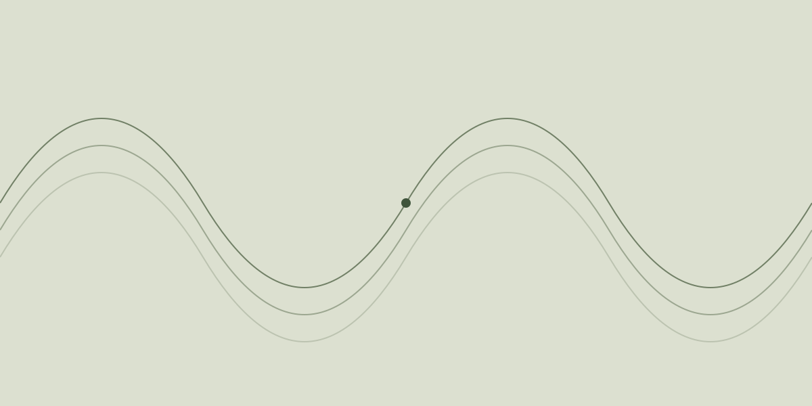

Тестовая статья / 001
Как выглядит волна
Иногда один ползунок объясняет больше, чем несколько абзацев. Попробуем изменить волну и увидеть, что произойдёт.
Эта страница показывает, как будут выглядеть материалы канала: короткие объяснения, большие картинки и эксперименты прямо внутри текста. Здесь можно остановиться и проверить идею самостоятельно.

Два параметра — много вариантов
Амплитуда задаёт высоту волны. Частота определяет, сколько колебаний поместится на выбранном отрезке. Меняйте параметры по одному, чтобы заметить разницу.
Маленькая лаборатория
Настройте волну. График меняется сразу.
Что происходит внутри
Для каждой точки по горизонтали вычисляем высоту с помощью синуса. В формуле amplitude меняет размах, а frequency — число периодов.
// Высота волны в точке x, где x от 0 до 1
function wave(x, amplitude, frequency) {
return amplitude * Math.sin(2 * Math.PI * frequency * x);
}Интерактив нужен там, где собственное действие помогает увидеть закономерность.
Попробуйте сами
- Установите амплитуду в ноль. Что осталось от волны?
- Верните высоту и увеличьте частоту вдвое.
- Переключите тему и сравните, как читается график.
← Все статьи